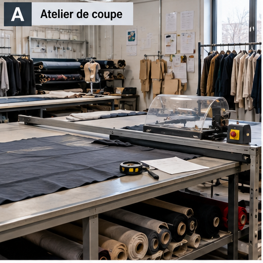
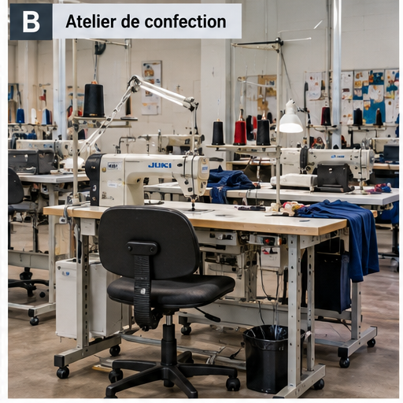
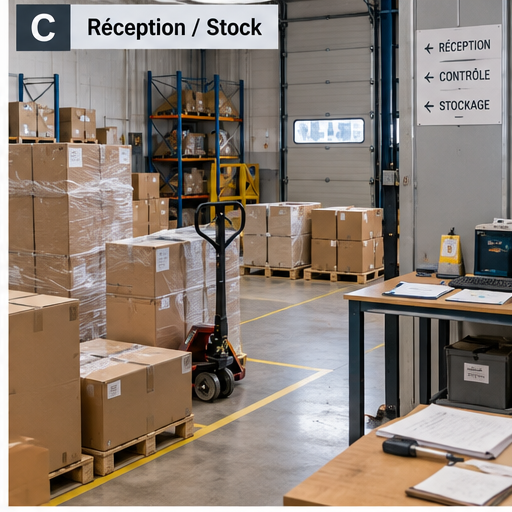
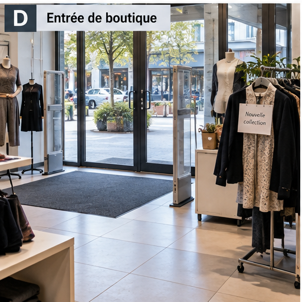
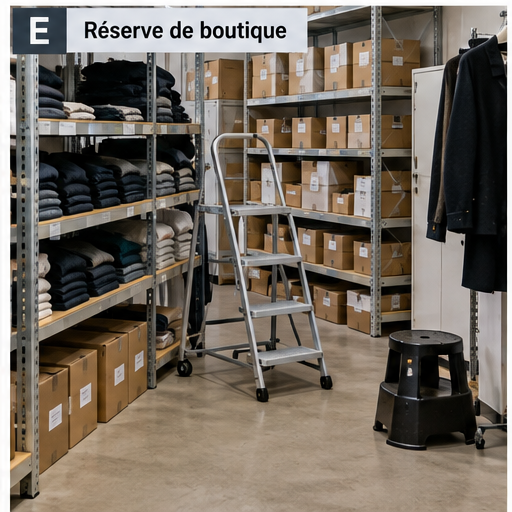
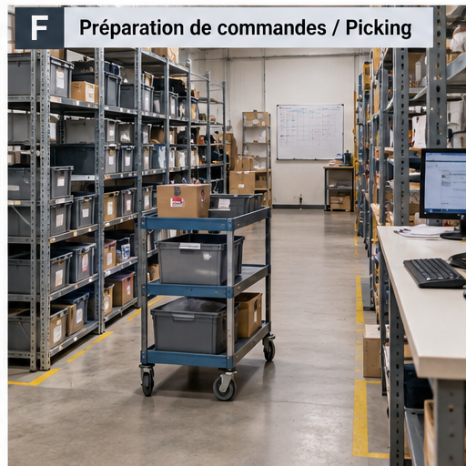

R10 · Document créé pour le TP
Observations de terrain et entretiens complémentaires
Ces éléments sont fictifs. Avant de les consulter, formulez ce que vous cherchez à vérifier. La planche présente plusieurs zones de travail sans indiquer laquelle est liée à l’information que vous recherchez.
1. Aller voir : planche des zones de travail
Consigne : observez d’abord les six zones sans ouvrir les entretiens. Relevez uniquement des faits visibles. Distinguez ce que l’image permet d’établir de ce qu’elle ne permet pas de savoir. Agrandissez uniquement les zones que vous jugez utiles à votre enquête.






Important : aucune zone n’est désignée comme « la bonne ». Le choix d’une zone doit découler des informations que vous cherchez à vérifier.
2. Demander : entretiens et compléments disponibles
N’ouvrez un entretien qu’après avoir noté les questions auxquelles vous cherchez une réponse. Une déclaration complète une observation ; elle ne transforme pas automatiquement une hypothèse en fait.
INC-01 — Atelier coupe · dégagement d’un tissu coincé
Entretien : l’opératrice indique que le tissu s’était replié à l’entrée de la zone de coupe. Elle a arrêté l’avance normale de la machine puis a tenté de dégager le tissu à la main, comme cela lui était déjà arrivé. Elle ne se souvient pas d’avoir utilisé l’arrêt d’urgence. Elle indique que le protecteur était en place mais ne sait pas préciser s’il empêchait l’accès pendant cette opération.
Observation complémentaire : le protecteur et l’arrêt d’urgence sont présents. La procédure à appliquer en cas de tissu coincé n’est pas affichée au poste. Un contrôle du dispositif d’arrêt d’urgence réalisé le 03/09/2026 a signalé un temps de réaction jugé trop long ; une intervention de maintenance est planifiée.
INC-03 — Réception / stock · incident de manutention
Point de départ : le registre indique seulement « Douleur au dos signalée pendant une opération de réception ». Cette formulation ne permet pas encore d’établir le geste réalisé, les circonstances ni les causes de l’incident.
Règle : n’ouvrez une réponse qu’après avoir formulé votre propre question. Chaque réponse doit vous aider à décider de la question suivante. Vous n’êtes pas obligé d’utiliser toutes les questions.
Question d’enquête initiale — ouvrir après avoir écrit votre question
Une question pertinente pourrait être : « Que faisiez-vous juste avant la douleur et comment l’événement s’est-il produit ? »
Réponse de la victime : « Je terminais une réception. Deux cartons devaient être déplacés de quelques mètres pour libérer la zone. Je les ai pris ensemble à la main. En arrivant, je me suis tourné avec les cartons pour les poser et j’ai ressenti une douleur nette dans le bas du dos. »
Pourquoi 1 — ouvrir après avoir formulé la cause immédiate à vérifier
Une question pertinente pourrait être : « Pourquoi avez-vous déplacé les deux cartons à la main ? »
Réponse : « J’utilise normalement le diable ou un chariot, mais le diable n’était pas dans la zone de réception. »
Pourquoi 2 — ouvrir après avoir choisi ce qu’il faut expliquer ensuite
Une question pertinente pourrait être : « Pourquoi le diable n’était-il pas dans la zone de réception ? »
Réponse : « Plusieurs personnes utilisent le diable et les chariots. Ils ne reviennent pas toujours au même endroit après utilisation. »
Pourquoi 3 — ouvrir après avoir recherché une cause d’organisation
Une question pertinente pourrait être : « Pourquoi le matériel ne revient-il pas toujours au même endroit ? »
Réponse : « Il n’y a pas vraiment d’emplacement défini. On le laisse généralement là où on finit de l’utiliser. »
Pourquoi 4 — ouvrir après avoir recherché ce qui encadre cette pratique
Une question pertinente pourrait être : « Pourquoi aucun emplacement fixe n’est-il défini ? Existe-t-il une règle de remise en place ? »
Réponse : « Pas à ma connaissance. On sait qu’il faut utiliser les aides de manutention, mais je ne connais ni emplacement matérialisé ni règle de remise en place. »
Pourquoi 5 — décider s’il faut aller plus loin
Question possible : « Pourquoi l’organisation n’a-t-elle pas prévu de règle ou de contrôle de disponibilité du matériel ? »
Réponse disponible : l’entretien ne permet pas de répondre. Arrêtez ici la chaîne et indiquez ce point « à vérifier » auprès du responsable de la réception. Ne fabriquez pas une cinquième cause.
Branche complémentaire — pourquoi le salarié n’est-il pas allé chercher le matériel ?
Réponse : « Une autre livraison devait arriver peu après. Je voulais libérer rapidement la zone et je pensais que le déplacement serait court. »
Cette réponse ouvre une seconde branche possible liée à la contrainte temporelle. Les informations disponibles ne permettent pas d’affirmer que la planification des livraisons est défaillante : ce point reste à vérifier.
Vérifications permettant d’écarter d’autres hypothèses
La victime précise qu’elle n’a ni chuté, ni trébuché, ni été heurtée. Le sol était sec et le passage était libre. Ces réponses permettent d’écarter, pour cet événement, les hypothèses de chute de plain-pied, de heurt et de sol glissant.
Observation de terrain : un diable et deux chariots existent bien dans l’entreprise. Aucun emplacement fixe n’est matérialisé dans la zone de réception et aucune consigne de remise en place n’est affichée.
À vous de conclure : distinguez le mécanisme de l’incident, les causes immédiates et les causes plus profondes. Une réponse « le salarié a mal porté » est insuffisante si les conditions de travail permettent de remonter plus loin.
INC-04 — Boutique · glissade près de l’entrée
Entretien : la salariée indique qu’il pleuvait depuis plusieurs heures. Le tapis d’entrée était humide et plusieurs clients étaient entrés avec des chaussures mouillées. Elle ne se souvient pas avoir vu de panneau signalant un sol humide.
Observation complémentaire : un tapis absorbant est installé en permanence. Aucun panneau mobile « sol humide » n’est disponible dans la réserve de la boutique. Le nettoyage est prévu chaque matin, sans contrôle spécifique en cours de journée lorsqu’il pleut.
INC-11 — Atelier confection · douleurs cervicales
Entretien : la salariée précise que le poste est utilisé par plusieurs personnes et que les réglages sont modifiés au cours de la journée. Elle règle le siège « à peu près » mais aucun repère n’est conservé. Elle signale aussi que l’éclairage local lui paraît faible sur certaines opérations de précision.
Observation complémentaire : les sièges sont réglables. Aucun réglage de référence n’est affiché et aucune trace de sensibilisation récente à l’ajustement du poste n’est disponible.
INC-13 — Boutique · accès à une étagère haute
Entretien : la salariée indique avoir utilisé un petit tabouret présent dans la réserve pour gagner du temps. Elle connaissait l’existence d’un escabeau, mais celui-ci était rangé dans l’autre réserve et nécessitait de traverser l’espace de vente.
Observation complémentaire : l’escabeau est conforme et en bon état, mais il n’est pas stocké dans la réserve où l’événement s’est produit. Le tabouret domestique est toujours présent dans cette réserve.
INC-16 — E-commerce · heurt dans la zone de picking
Entretien : pendant une période de forte activité, plusieurs bacs avaient été déposés provisoirement au sol en attente de traitement. Le salarié indique que cette situation est devenue plus fréquente depuis l’augmentation du volume de commandes.
Observation complémentaire : une démarche 5S a été lancée le 01/09/2026, mais les emplacements définitifs des bacs ne sont pas encore tous matérialisés et aucune règle de stockage temporaire n’est encore formalisée.
3. Croiser avant de conclure
Pour chaque événement étudié, confrontez le registre, les faits visibles sur la planche, les déclarations recueillies et les mesures déjà inscrites au DUERP. Si une information reste inconnue, indiquez-la explicitement au lieu de la déduire.